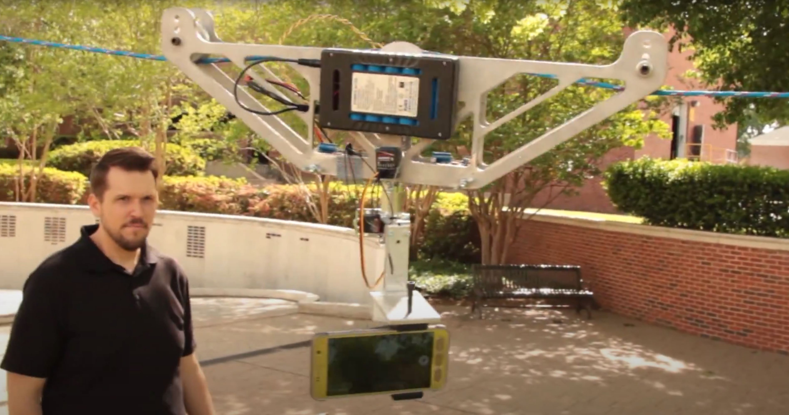

Cable Camera
Click on the image below to view a video of this presentation:
This project was one of the earliest projects I had the priviledge of working on in my college career. It established many elements of the design process that I would carry on through the rest of my degree. This also gave me a challenge: I had never used Adobe Premiere before, so I took it upon myself to learn the program in order to create the accompanying video.
Unfortunately, most of the paperwork from this project has been lost to time, but the video remains. We spent countless hours researching, designing and testing the product.
As with every project, several challenges arose. Some of those challenges included:
1.) Limited Budget: $300 maximum
2.) Speed vs. Power constraints: Needed to travel 100 yards in 60 seconds; however, most motors in our budget did not have the power-to-weight ratio to handle that. We finally found one that could get close and decided to lighten the frame as much as possible.
3.) Even during the filming of the presentation, it was an incredibly windy day: Winds were whipping up to 30 mph.
The team was able to pull together and solve these issues and completed the project within budget and on time. Admittedly, it wasn't as perfect as we would have liked, but even that taught us a valuable lesson about engineering: sometimes the product just has to perform. It's not always possible to meet every customer standard, but if you keep striving to exceed those standards, then you can still create a satisfying product that the customer will be pleased with.
Correction: In the video, I say "6160 Aluminum." This is supposed to be 6061 Aluminum.